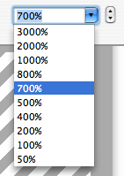

Changing the document's zoom factor
Because Pixen is a tool designed for editing high-detail art, it's vitally important that you have tight control over how your document is zoomed. Pixen provides a number of ways for you to change your zoom.
- Perhaps most intuitively, you can use the zoom tool, which both centers and zooms.
- In the view menu, there are the basic commands for zooming in and out (⌘= and ⌘-, respectively). Additionally, there are commands for zooming to 100% and for zooming to fit the window (⌘[ and ⌘], respectively).
- If you have a mouse with a scroll wheel, scrubbing the wheel will make the document zoom in and out.
-
The most powerful way to control your zoom factor, however, is by using the zoom toolbar item:
The stepper to the right of the combo box zooms in and out (up and down), but it is the box itself that is of interest.
Selecting a zoom factor zooms to it. But this is the list that the previous methods all use when zooming in and out: they step up an down one row in this list.
So if you type a new number into the box, it will be added to the list, and the document will stop at that zoom percentage on its way in and out.